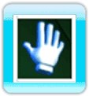
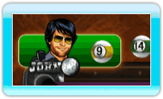
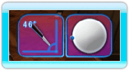
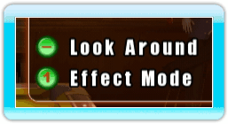
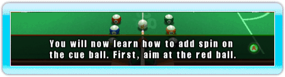
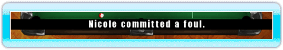
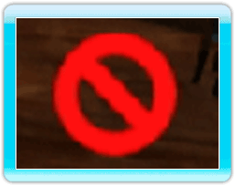

12 |
Game Interface |
 |
Cursor The hand is your cursor for the menus. An open hand indicates that you are not over an icon that you can select. A pointing index finger indicates that you can make a selection. While aiming in-game, the hand cursor is replaced with a cross. This cross simply indicates your Wii Remote's position on the screen, making it easier for you to aim while you hold the A Button. Character Status Bar The character status bar displays the active player's picture and name.  In 9-Ball, it also displays the next ball to hit. In 8-Ball, it displays the color (UK) or type (US) of ball legal for the active player. It displays a question mark if none has been assigned yet. To the right of the Character Status Bar, you can see all the balls pocketed by the active player so far. The Effects Status Bar The Effect Status bar displays any modifications made to the active player's cue angle and cue ball spin. It appears on the top-right hand side of the screen. Help Box In the top right corner of the screen, the Help Box displays the controls available to you. These controls change dynamically depending on what screen you are on. Dialog Box On the bottom of the page, the Dialog Box displays useful information in the form of game tutorials and challenges. Information Ticker The Ticker displays information relative to the game itself such as announcements about fouls. It also displays subtitles for the players' dialogs. No Skip Icon This icon is displayed if you attempt to skip an animation that cannot be skipped. |
 |
 |
 |